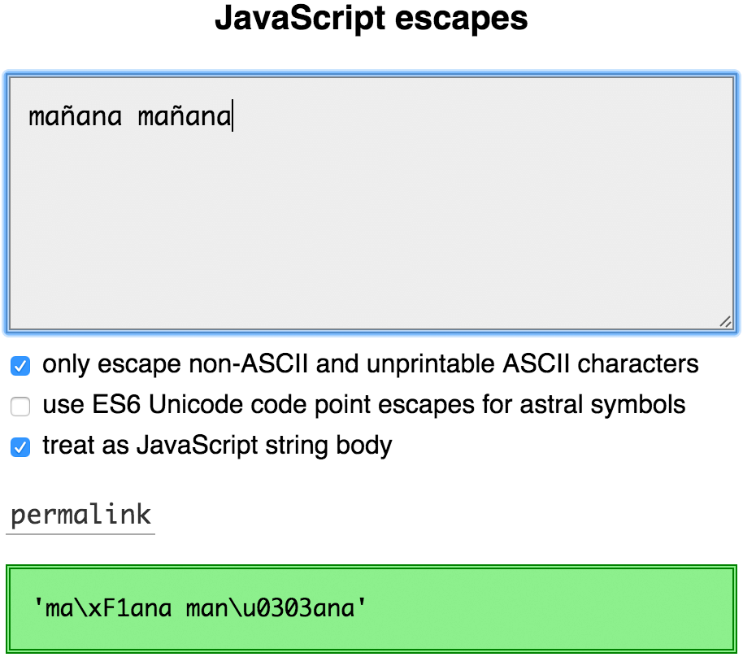

JavaScript 有个 Unicode 天坑
- Unicode 基础
- 转义序列
- 计算字符串中的字符数量
- 逆转 JS 字符串
- 关于字符串方法里的 Unicode 问题
- 正则里的 Unicode 问题
- 生活中的 bug，以及如何避免
- 介绍……The Pile of Poo Test™
- Slides
- Translations
- Comments
原文：https://mathiasbynens.be/notes/javascript-unicode
原文日期：20th October 2013
原文作者：Mathias
翻译日期：01/16/23 00:15:24 CST
JS 处理 Unicode 的方法非常的……惊吓。本文解释了 JS 里和 Unicode 相关的痛点，提供了常见问题的解决方案，也解释了 ES6 标准是怎样改善现阶段的。
Unicode 基础
在我们深入 JS 前，我们要保证我们对 Unicode 的理解在同一次元。
我们很容易把 Unicode 想像成一个数据库，它把所有符号都映射成了被称为码点的数字和一个唯一名称。这就能很简单地引用一个特定符号而不使用符号本身。例如：
Ais U+0041 LATIN CAPITAL LETTER A. “A”使用“U+0041”引用拉丁大写字母 A。ais U+0061 LATIN SMALL LETTER A. “a”使用“U+0061”引用拉丁小写字母 A。©is U+00A9 COPYRIGHT SIGN. “©”使用“U+00A9”引用版权符号。☃is U+2603 SNOWMAN. “☃”使用“U+2603”引用雪人。💩is U+1F4A9 PILE OF POO. “💩”使用“U+1F4A9”引用一坨便便。
码点通常被展示成十六进制数字，“零填充”至少四位，携带“U+”前缀。
码点的范围是从 U+0000 到 U+10FFFF 之间，大概有 110 万（1114095）个字符。为了井然有序不失控，Unicode 把码点分成了 17 个平面（17 等份），每个平面有 65000（65535）个码点。
第一个平面（U+0000 → U+FFFF）被称为基本多文种平面或 BMP，也是最重要的一个平面，因为它囊括了所有最常用的字符。在英语文档里，大部分情况你不再需要 BMP 平面外的其它平面的字符了。和别的平面一样，BMP 里有 65000 个符号。
剩下的约 100 万个码点（U+010000 → U+10FFFF）分布在 BMP 之外。属于这些码点的平面被称为补充（辅助）平面，或星星平面（后文统一称为辅助平面，辅助平面中的字符称为辅助字符，辅助字符的码点称为辅助码点）。
辅助码点很好识别：如果某个字符需要你用大于 4 位的十六进制数来表示码点，那它就是辅助码点。
现在我们对 Unicode 有了基本认识，让我们看看它是怎么应用在 JavaScript 的字符串里的。
转义序列
你可能以前看过这样的东西：
1 | >> '\x41\x42\x43' |
这是十六进制转义序列。他们由两位十六进制数字组成，用来引用匹配到的码点。例如，\x41表示 U+0041 大写字母 A。这种转义序列可以表示在 U+0000 到 U+00FF 间的码点。
下面这种转义也很常见：
1 | >> '\u0041\u0042\u0043' |
这是 Unicode 转义序列。他们用 4 位十六进制数字表示码点。例如，\u2661表示 U+2661 白色心形。这些转移序列可以表示 U+0000 到 U+FFFF 范围内的码点，也就是完整的基本多文种平面（BMP）。
其它平面的码点如何表示——辅助平面呢？我们还需要添加 4 位十六进制数字（共 8 位）来表示这些码点……所以该怎么转义它们？
在 ES6 中很容易，因为 ES6 引入了一种新的转义序列方法：Unicode 码点转义。例如：
1 | >> '\u{41}\u{42}\u{43}' |
你可以在花括号之间写十六进制数字，这样能够表示所有的码点。这不会像上面的十六进制转移序列和 Unicode 转移序列，没有限制花括号内数字的位数，所以可以很容易转义所有字符的码点。
如果要向后兼容 ES5 和更老的环境，不好意思只能用代理对的方式（来表示辅助平面的字符）：
1 | >> '\uD83D\uDCA9' |
这个例子里，每个转义字符表示半个代理对的码点。两个一半的代理对组成一个辅助平面的字符。
请注意代理对由两部分组成，代理对是由原始码点计算出来的，已经和原始码点不一样了。有公式可以通过辅助码点计算出代理对，也可以通过代理对计算出辅助码点。
使用代理对能表示所有的辅助码点（从 U+010000 到 U+10FFFF）……可是像这样用单个转义字符表示 BMP 符号，用两个转义字符表示辅助符号，会让人觉得困惑了，最终也会产生很多混乱的问题。
计算字符串中的字符数量
如果你要计算字符串长度，该怎么做？
我的第一反应很简单，通过 length 属性得到字符串长度。
1 | >> 'A'.length // U+0041 LATIN CAPITAL LETTER A |
这个例子里，length 属性实际反映了字符数量。很容易理解：如果用转移序列表示符号，很明显对于每个符号，我们只需要一个转义字符。可是，事情不会一直顺利！下面是个稍微不同的例子：
1 | >> '𝐀'.length // U+1D400 MATHEMATICAL BOLD CAPITAL A |
JavaScript 在内部用代理对表示辅助符号，且把代理对的两部分当成成分开的两个“字符”。如果你只能用兼容 ES5 的转义序列表示符号，你会看到辅助符号都需要两个转义符号表示。让人难懂，因为我实际看见的字符数量和计算机告诉我的数量不一样。
解释辅助符号
回到问题：该怎样在 JS 里准确地获取符号字符数量？答案是计算代理对的数量，把每个代理对当成单个字符。就像下面这样：
1 | var regexAstralSymbols = /[\uD800-\uDBFF][\uDC00-\uDFFF]/g; |
或者如果你用 Punycode.js（Node.js 内置），可以用它的工具方法在 JS 字符串和 Unicode 码点间转换。punycode.ucs2.decode 方法把一个字符串转换成一个 Unicode 码点数组；每一个元素对应了每个符号。
1 | function countSymbols(string) { |
ES6 中，你可以利用 Array.from来计算字符串长度，它使用字符串迭代器来把字符串按单个符号字符分割成数组。
1 | function countSymbols(string) { |
或者也可以使用解构符号 ...：
1 | function countSymbols(string) { |
使用以上的任意一个 ES6 方法，我们的结果都更准确了：
1 | >> countSymbols('A') // U+0041 LATIN CAPITAL LETTER A |
解释规范化
但如果我们更考究一点，计算字符串字符数量有更复杂的场景。考虑下面的例子：
1 | >> 'mañana' == 'mañana' |
JS 说这两个串不同，但我们看上去是一摸一样！所以又出了什么问题？
我的 JS 转义工具会告诉你，原来是下面这样：
1 | >> 'ma\xF1ana' == 'man\u0303ana' |
第一个字符串包括了 U+00F1 带颚化符的拉丁小写字母 N，第二个字符串使用两个单独的码点（U+006E 拉丁小写字母 N 和 U+0303 组合颚化符）来创建相同的字型。这就解释了为什么它们不等，为什么有不同的 length。
可如果我们想拿到我们实际看到的字符数量，我们预期的答案是两个长度为 6 的字符串，因为这是视觉上能够区分的数量。该怎样实现呢？
ES6 的方案很简单：
1 | function countSymbolsPedantically(string) { |
String.prototype 上的 normalize 方法执行 Unicode 规范化。如果某个单个码点和另一个通过组合标志（combining mark）组合的码点，形成了相同的字型，他会被规范化成一个单独的码点形式。
1 | >> countSymbolsPedantically('mañana') // U+00F1 |
如果要向后兼容 ES5 和更老的环境，可以使用一个 String.prototype.normalize 的 polyfill。
解释其它组合标志
目前为止还不够完美——应用多个组合符号的码点总会得到一个视觉上是单个字型的字符，但这个字符可能没有规范化的形式，这种情况规范化也没有帮助。例如：
1 | >> 'q\u0307\u0323'.normalize('NFC') // `q̣̇` |
如果你需要一个更准确的结果，你可以用一个正则来移除组合标志。
1 | // Note: replace the following regular expression with its transpiled equivalent |
这个函数移除所有组合标志，只留下原字符本身。（未匹配到的组合标志被完好地保留下来？）。这个方案甚至能在 ES3 的环境工作，它提供了目前为止最准确的结果：
1 | >> countSymbolsIgnoringCombiningMarks('q\u0307\u0323') |
解释其他类型的字型族
上面的算法还是太简单了——它不能处理类似 நி (ந + ி)的字型族，由 conjoining Jamo 构成的韩文，例如 깍（ᄁ + ᅡ + ᆨ），emoji 序列，例如 👨👩👧👦（👨 + U+200D ZERO WIDTH JOINER + 👩 + U+200D ZERO WIDTH JOINER + 👧 + U+200D ZERO WIDTH JOINER + 👦），以及其它类似的符号。
Unicode Text Segmentation 上的 Unicode Standard Annex #29 描述了一种确定字型族边界的算法。如果要完全准确的结果，工作于所有 Unicode scripts 中，就要在 JS 里实现这个算法，然后就能把每个字型族当作单个符号。已经有一个关于这项工作的草案。
逆转 JS 字符串
这是个类似问题的例子：在 JS 里逆转一个字符串。这还不简单？飞快写出答案：
1 | // naive solution |
大部分情况都工作良好：
1 | >> reverse('abc') |
直到碰到了包含组合标志和辅助符号的字符串，就完全错误了：
1 | >> reverse('mañana') // U+006E + U+0303 |
为了能在 ES6 中正确地逆转辅助符号，我们要利用 Array.from 使用字符串迭代器：
1 | // slightly better solution that relies on ES6 StringIterator and `Array.from` |
虽然辅助符号的代理对问题解决了，但还是不能解决带有组合符号的字符串。
可幸，有一位叫 Missy Elliot 的杰出计算机科学家提出了一种解决这些问题的算法：
I put my thang down, flip it, and reverse it. I put my thang down, flip it, and reverse it.「我抛开当下，转换姿势。我抛开当下，转换姿势。——歌曲“Work It”的网易云翻译」
事实上：通过将组合标志和被组合的符号进行交换，以及在进一步字符串操作之前逆转代理对，可以成功避免这些问题。谢谢你，Missy！
1 | // using Esrever (https://mths.be/esrever) |
关于字符串方法里的 Unicode 问题
这种代理对的行为同样影响了其他字符串方法。
转变码点至符号
String.fromCharCode 允许你通过 Unicode 码点创建字符串。但是这个方法只能正确处理 BMP 中的范围（U+0000 到 U+FFFF）。如果你需要辅助码点，将不符预期。
1 | >> String.fromCharCode(0x0041) // U+0041 |
唯一的解决办法是自己计算，自己计算代理对的两部分，分别作为参数传入。
1 | >> String.fromCharCode(0xD83D, 0xDCA9) |
如果你不想体验计算代理对的糟糕生活，你还得用 Punycode.js 的工具方法：
1 | >> punycode.ucs2.encode([ 0x1F4A9 ]) |
可幸，ES6 引入了能正确处理辅助符号的 String.fromCodePoint。它可以被用到所有 Unicode 码点中，范围是 U+000000 到 U+10FFFF 全覆盖。
1 | >> String.fromCodePoint(0x1F4A9) |
要兼容 ES5 和更老的版本，要使用 String.fromCodePoint 的 polyfill。
从字符串里获取符号字符
如果你要用 String.prototype.charAt 来获取首字符是便便的字符串的第一个字符，你只会得到半个代理对，而不是整个字符。
1 | >> '💩'.charAt(0) // U+1F4A9 |
ES7 有个引入 String.prototype.at 的草案。它会像 charAt 一样但是能获取到完整的字符而不是一半代理对。
1 | >> '💩'.at(0) // U+1F4A9 |
如果要兼容老环境，请使用 polyfill。
从字符串获取码点
同样，如果你用 String.prototype.charCodeAt 来获取第一个字符的码点，你会得到半个代理对而不是整个字符。
1 | >> '💩'.charCodeAt(0) |
感谢 ES6 又提供了 String.prototype.codePointAt，可以正确的拿到预期的完整字符而不是半个代理对。
1 | >> '💩'.codePointAt(0) |
兼容问题请用 polyfill。
遍历字符串的所有符号字符
现在假设你要遍历一个字符串，而且要对每个字符单独处理。
在 ES5 里你要写大量的模版代码（boilerplate code）来计算代理对：
1 | function getSymbols(string) { |
或者，你可以利用像 var regexCodePoint = /[^\uD800-\uDFFF]|[\uD800-\uDBFF][\uDC00-\uDFFF]|[\uD800-\uDFFF]/g; 一样的正则来遍历匹配到的字符。
现在，在 ES6 你能直接用 for...of。字符串迭代器会处理完整字符而不是代理对。
1 | for (const symbol of '💩') { |
for...of 不能用 polyfill 了，因为这是语法级别的构造。
别的问题
这样的行为影响几乎所有的字符串方法，包括以上没有提及的（诸如 String.prototype.substring、 String.prototype.slice 等等），所以要谨慎使用这些方法。
正则里的 Unicode 问题
匹配码点和 Unicode scalar 值
点操作符（.）在正则里只匹配“字符”……但是 JS 暴露了代理对表示单独的“字符”，这就导致点操作符处理不了辅助符号。
1 | >> /foo.bar/.test('foo💩bar') |
让我们想一会儿……什么正则能匹配 Unicode 字符？有什么想法？就像前面说的，. 符号不行，因为它不能匹配换行和完整的辅助符号。
1 | >> /^.$/.test('💩') |
为了正确匹配换行符号，我们可以用 [\s\S]，但这还不能匹配辅助符号。
1 | >> /^[\s\S]$/.test('💩') |
事实证明，正则匹配 Unicode 字符不容易：
1 | >> /[\0-\uD7FF\uE000-\uFFFF]|[\uD800-\uDBFF][\uDC00-\uDFFF]|[\uD800-\uDBFF](?![\uDC00-\uDFFF])|(?:[^\uD800-\uDBFF]|^)[\uDC00-\uDFFF]/.test('💩') // wtf |
当然，你肯定不想手写匹配这些字符的正则，更别谈调试了。为了生成前面的正则，我用了 Regenerate 这个工具，这是一个根据码点和符号来创建正则的库。
1 | >> regenerate().addRange(0x0, 0x10FFFF).toString() |
从左往右表示，匹配 BMP 字符，匹配代理对，匹配只剩下一半的代理对（后文统一称为孤独代理对）。
虽然孤独代理对在 JS 中技术上是允许出现的，但它们不映射任何字符，应该避免。Unicode scalar 值指的是除代理对用到的码点之外的码点。下面是个用于匹配 Unicode scalar 值的正则：
1 | >> regenerate() |
Regenerate意味着可以被用在作为构建脚本的一部分，用来创建复杂的正则，同时可以保持构建脚本的易读性和易维护性。
ES6 将有望引入 u 修饰符，这时 . 操作符可以匹配完整的码点，而不是代理对的一半。
1 | >> /foo.bar/.test('foo💩bar') |
注意 . 操作符仍然不能匹配换行符。当设置 u 修饰符时，. 操作符相当于下面的兼容操作：
1 | >> regenerate() |
字符集合中的辅助符号
/[a-c]/匹配在 U+0061 字母 a 到 U+0063 字母 c 的范围，它让我们想到 /[💩-💫]/ 也会匹配从 U+1F4A9 到 U+1F4AB 范围的字符，事实并非如此：
1 | >> /[💩-💫]/ |
这是因为上面的正则相当于下面这样：
1 | >> /[\uD83D\uDCA9-\uD83D\uDCAB]/ |
我们想它会匹配 U+1F4A9、U+1F4AA 和 U+1F4AB，但实际上匹配了：
- U+D83D（高位代理），或……
- 从 U+DCA9 到 U+D83D 间的范围（这是无效的，因为左边的码点 U+DCA9 小于右边的码点 U+D83D），或……
- U+DCAB（低位代理）。
再次，又又因为 ES6 提供了 u 修饰符让你能更合理地操作。
1 | >> /[\uD83D\uDCA9-\uD83D\uDCAB]/u.test('\uD83D\uDCA9') // match U+1F4A9 |
很难过，u 修饰符不兼容老环境。如果需要，可以用 Regenerate 来生成兼容的表达式，来匹配辅助平面范围的符号：
1 | >> regenerate().addRange('💩', '💫') |
更新：另一个办法是通过包含 regexpu 的编译工具编译你的代码。我写了另一片博客，详细介绍了 ES6 支持 Unicode 的正则。
生活中的 bug，以及如何避免
这样的行为会导致很多问题。推特允许一条推文有 140 个字符，而且它们的服务端不介意符号的类型——辅助符号或其它符号类型。但它们的前端只是读取 length 属性，所以不能够输入超过 70 个字符。（bug 已修复。）
很多库不能正确处理辅助符号。
例如 Countable.js 就不能正确处理辅助符号。
Underscore.string 的 reverse 的实现不能处理组合标志和辅助符号。（使用 Missy Elliot 算法代替。）
解码 HTML numeric entities 到辅助符号也会发生错误，例如 💩。许多 HTML entity 转换器库有同样的问题。
这些都是很容易碰到的问题——毕竟 JavaScript 处理 Unicode 的方式很头疼。本文已经展示了如何解决这些问题；那么如何预防呢？
介绍……The Pile of Poo Test™
当你在编写处理字符串或正则的 JavaScript 代码时，只需要在单元测试里字符串上加个“💩”，看看有没有问题。这个方法快速、开心、简单地检查你的代码支不支持辅助平面的字符。一旦有什么问题，用上文提到的技术解决就行了。
一般测试一个字符串的 Unicode 支持度的好例子如下：Iñtërnâtiônàlizætiøn☃💩。头 20 个字符在 U+0000 到 U+00FF 的范围，后面一个字符在 U+0100 到 U+FFFF 的范围，最后一个字符是辅助符号字符（范围在 U+010000 到 U+10FFFF）。
TL;DR Go forth and submit pull requests with piles of poo in them. It’s the only way to Unicode the Web Forward®.
Slides
……
Translations
- Korean: 자바스크립트의 유니코드 문제 by Eugene Byun
Comments
……